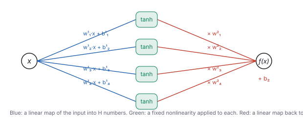
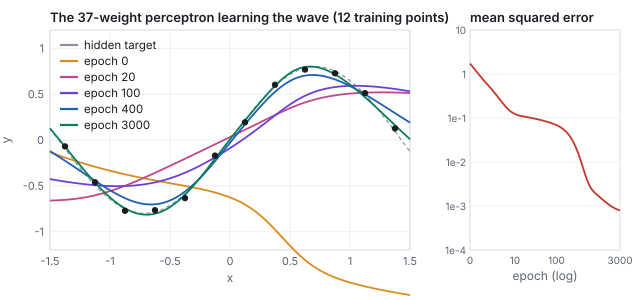
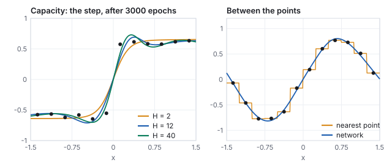
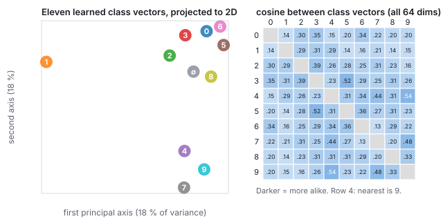
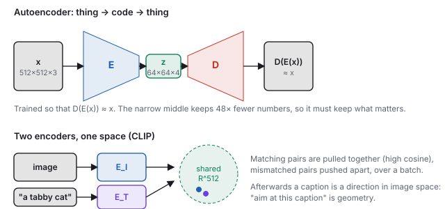

This chapter links to the course’s interactive demos and to original
papers on the open web, and it uses MathJax for its formulas. Read it
through the course website (or download the file and open it in a
browser); a Canvas inline preview will reach neither the demos nor the
math. All chapters.
Neural Networks and Embeddings
CSS 551 · Advanced 3D Computer Graphics · course text
Course text · a network as a function, and the vectors it learns to think in. Assigned by your offering’s course site; the two live exhibits it cites are in the lecture on learned images.
Three ideas underlie every model in the chapters that follow: a neural network is a function whose weights are set by examples; an embedding is a learned vector that stands for a concept, placed so that similar concepts are near; and an encoder and a decoder move between things and their embeddings, with two encoders trained side by side making words and pictures one coordinate system. This chapter states each idea, runs the smallest possible example of it by hand, and shows the same thing computed at full size from the course’s own trained network.
Definition (neural network)
A neural network is a function \(f_\theta : \mathbb{R}^{n} \to \mathbb{R}^{m}\)
built from alternating linear maps and fixed nonlinearities, whose
behavior is set by a vector of weights \(\theta\). The
two-layer perceptron of the lecture’s approximator exhibit is
\[
f_\theta(x) \;=\; b_2 + \sum_{h=1}^{H} w^{(2)}_h \,\tanh\!\big(w^{(1)}_h x + b^{(1)}_h\big),
\qquad \theta = (w^{(1)}, b^{(1)}, w^{(2)}, b_2) \in \mathbb{R}^{3H+1}.
\]

The perceptron as a wiring diagram, \(H = 4\). Read left to right: the input is multiplied by \(H\) weights and offset by \(H\) biases (blue), each result is squashed by \(\tanh\) (green), and the \(H\) squashed numbers are combined by a second linear map (red). Nothing else happens. A “deep” network repeats the middle two stages several times, with vectors in place of single numbers.
There is no mystery in evaluating one. The point of the next example is
that you can do it with a pocket calculator, and that every larger
network is the same arithmetic with more rows.
Worked example (a forward pass by hand)
Take \(H = 2\) with weights
\(w^{(1)} = (1.0, -1.0)\), \(b^{(1)} = (0.5, 0.5)\), \(w^{(2)} = (0.8, -0.6)\),
\(b_2 = 0.1\), and the input \(x = 0.4\).
Seven weights, four multiplications, three additions, two table
lookups. The digit-drawing network of the diffusion chapter has a million
weights and its forward pass is about a million multiply-adds; it is
this table with 512 rows per stage and four stages.
2 · Training is gradient descent
Training is not programming. Given examples
\((x_i, y_i)\), define a loss such as the mean squared error
\(\mathcal{L}(\theta) = \frac{1}{N}\sum_i (f_\theta(x_i) - y_i)^2\), and
repeat two steps: compute the gradient \(\nabla_\theta \mathcal{L}\), the
direction in weight space that increases the loss fastest, and move
every weight a little the other way,
with a small learning rate \(\eta\). The gradient is computed
by the chain rule, organized so that every weight’s derivative is
obtained in one backward sweep through the diagram; that organization
is backpropagation
(Rumelhart, Hinton & Williams 1986).
For the perceptron the four derivatives are short enough to write down:
for a single example (average over the batch for more), using
\(\tanh' = 1 - \tanh^2\). Notice how the backward sweep reuses the
forward one: the \(a_h\) were already computed, and \(\delta\) is one
number passed back through the red edges, then through the green boxes,
to reach the blue edges.
Worked example (one gradient step by hand)
Continue the example above with the target \(y = 0.3\) and
\(\eta = 0.1\). The error is \(f - y = 0.3132\), the loss
\(0.3132^2 = 0.0981\), and \(\delta = 0.6265\).
the previous row times \(x = 0.4\): \((0.0976,\; -0.1489)\)
Step every weight against its gradient, \(\theta \leftarrow \theta - 0.1\,\nabla\):
\(w^{(1)} = (0.9902, -0.9851)\), \(b^{(1)} = (0.4756, 0.5372)\),
\(w^{(2)} = (0.7551, -0.6062)\), \(b_2 = 0.0374\). Rerun the forward pass
with the new weights: \(f = 0.4814\), loss \(0.0329\), down from
\(0.0981\). One step took the output a third of the way to the target;
the sign of every change was decided by the chain rule, not by anyone
looking at the problem. Repeat a few thousand times over a few thousand
examples and that is all training is.

The approximator exhibit, computed offline by the same library the demo runs: \(H = 12\) (37 weights), full-batch gradient descent on 12 points of a hidden wave, \(\eta = 0.05\). The random-weight curve (orange) has nothing to do with the data; by epoch 20 it has found the general slope, by 400 the shape, by 3000 it passes through every point and follows the hidden curve between them. Loss: 1.73, 0.105, 0.069, 0.0084, 0.0008.
See it liveA network that learns:
the same 37-weight perceptron trained in your browser. Drag
epochs from 0 and watch the curve bend a few steps per
frame while the loss plot falls; try 2 hidden units (it cannot bend
enough) and 40 (it fits a step with a smooth ramp).
3 · What a trained network is good for
Two facts about a trained network carry the rest of the chapter.
Capacity. A network with enough hidden units can
approximate any continuous function on a bounded domain to any accuracy
(Cybenko 1989,
Hornik 1991).
Each \(\tanh\) unit is a smooth step placed at \(x = -b^{(1)}_h/w^{(1)}_h\)
with steepness \(w^{(1)}_h\); a sum of enough steps can trace any curve.
The theorem says nothing about how many units or how much training;
the left panel below shows the practical version.
Smoothness between the examples. More important for
what follows: a trained network interpolates. Between two
training points it draws a smooth curve, not a jump to the nearer
one. A lookup table has the first property trivially (store every
example) and the second not at all. The right panel is the whole
argument of the diffusion chapter in one picture: the exact denoiser
it derives is a lookup table over the training set, and replacing it by
a network is what lets the model produce images that are not in the set.

Left: the step target after 3000 epochs with \(H = 2\), 12 and 40 (loss 0.016, 0.010, 0.005). Two units suffice for one step; more units fit the noise around it too. Right: the same twelve wave points answered two ways. The staircase returns the nearest stored example, which is what a table does; the network passes through the same points and is smooth in between.
4 · Embeddings
Definition (embedding)
An embedding of a set of things (words, digits, images)
is a map from each thing to a vector in \(\mathbb{R}^d\), learned so that
things which behave alike land near each other. Similarity is measured
by distance or, more often, by the cosine of the angle between vectors,
\[
\cos(\mathbf{u}, \mathbf{v}) = \frac{\mathbf{u}\cdot \mathbf{v}}{\|\mathbf{u}\|\,\|\mathbf{v}\|} \in [-1, 1].
\]
Worked example (cosine similarity)
Let \(\mathbf{u} = (3, 4, 0)\), \(\mathbf{v} = (4, 3, 0)\) and
\(\mathbf{w} = (-4, 3, 0)\). All three have length 5.
\(\mathbf{u}\cdot\mathbf{v} = 12 + 12 + 0 = 24\), so
\(\cos(\mathbf{u},\mathbf{v}) = 24/25 = 0.96\): nearly the same
direction. \(\mathbf{u}\cdot\mathbf{w} = -12 + 12 + 0 = 0\), so
\(\cos(\mathbf{u},\mathbf{w}) = 0\): unrelated. Cosine ignores length,
which is why embeddings are usually normalized and only their direction
carries meaning.
Nobody places the points. A network puts them where its task goes better;
the famous 2013 result was that word vectors trained only to predict
neighboring words end up supporting arithmetic, with “king”
minus “man” plus “woman” landing near
“queen” (Mikolov et al.).
The lecture’s embedding exhibit is a smaller and more honest
version that you can check to the last digit: the digit-drawing network
of the diffusion chapter carries a table of eleven 64-dimensional class vectors
(one per digit, one for “no class”) that it learned only from
denoising. Nobody told it that a 4 looks like a 9.

Read straight from the weight file. Left: the eleven vectors projected onto their two principal axes (18 % and 18 % of the variance; the picture is a shadow of a 64-dimensional arrangement). Right: every pairwise cosine, computed in all 64 dimensions. The nearest neighbor of 4 is 9 (0.54), of 3 is 5 (0.52), of 7 is 9 (0.48), of 2 is 3 (0.39); the 1, which shares strokes with nothing, is far from everything. The network placed digits that share strokes together because a denoiser that knows “this is a 4” and “this is a 9” must do nearly the same work for both.
See it liveEmbeddings, read from the weights:
the same class table, projected live, with the readout’s cosines
using all 64 dimensions.
5 · Encoders, decoders, and one shared space
An encoder is a network that maps a thing to its
embedding, \(E : \text{thing} \to \mathbb{R}^d\); a decoder
maps back, \(D : \mathbb{R}^d \to \text{thing}\). Trained together to
reproduce their input through a narrow middle,
\(\min_{E,D} \sum_i \|D(E(x_i)) - x_i\|^2\), they form an
autoencoder, and the middle is forced to keep only what
matters (Hinton & Salakhutdinov 2006).
Stable Diffusion’s autoencoder is exactly this, with a variational
twist that keeps the latent well behaved: a \(512\times512\times3\) image
becomes a \(64\times64\times4\) latent, 48 times fewer numbers.

Top: the autoencoder. Only the code \(\mathbf{z}\) crosses the middle, so whatever the decoder needs to rebuild the picture must fit in it; edges, colors and layout survive, sensor noise does not. Bottom: two encoders trained into one space. After training, the arrow from a caption and the arrow from a matching photograph point the same way.
Two encoders, one space. Train an image encoder
\(E_I\) and a text encoder \(E_T\) side by side on hundreds of millions of
(image, caption) pairs with a contrastive objective: for each
batch, a matching pair must have a higher cosine than every mismatched
pair,
with a temperature \(\tau\). After training, a sentence and a photograph
are vectors in the same space, so “aim the picture at this
caption” becomes geometry. This is
CLIP (Radford et al. 2021),
and every concept you can say in words is now a coordinate.
Worked example (the contrastive loss on a batch of two)
Two images and their two captions give a \(2\times2\) matrix of cosines
\(S_{ij} = \cos(E_I(x_i), E_T(t_j))\); suppose the encoders currently produce
\[
S = \begin{pmatrix} 0.8 & 0.2 \\ 0.1 & 0.7 \end{pmatrix},
\]
matches on the diagonal. With \(\tau = 0.1\), row 1 becomes
\(\exp(8) = 2981.0\) against \(\exp(2) = 7.39\), so the probability
assigned to the right caption is \(2981.0/2988.3 = 0.9975\) and the loss
for that row is \(-\log 0.9975 = 0.0025\); row 2 gives the same. The batch
loss is \(0.005\): these encoders have already learned this batch.
Repeat with \(\tau = 1\): the same cosines give probabilities
\(0.646\) and a loss of \(0.44\) per row. The temperature is what turns
a small cosine margin into a decisive one; CLIP learns \(\tau\) and ends
near 0.01, which is why its similarities behave like sharp decisions.
The gradient of the loss pushes \(S_{11}\) and \(S_{22}\) up and the
off-diagonal entries down, and the only way to move a cosine is to
move the vectors: that is how the two encoders come to agree.
Exercise 1 (forward pass)
With the original weights of Section 1, evaluate \(f(-0.4)\).
Solution
\(z = (-0.4 + 0.5,\; 0.4 + 0.5) = (0.1, 0.9)\), \(a = (0.0997, 0.7163)\),
\(f = 0.1 + 0.8\times0.0997 - 0.6\times0.7163 = 0.1 + 0.0798 - 0.4298 = -0.2500\).
The two units have swapped roles: the network is not symmetric in \(x\)
because \(w^{(2)}\) is not.
Exercise 2 (one more step)
Starting from the updated weights of Section 2, compute the gradient
with respect to \(b_2\) only and take a second step. Does the loss keep
falling?
Solution
After the first step \(f = 0.4814\), so \(\delta = 2(0.4814 - 0.3) = 0.3628\)
and \(\partial\mathcal{L}/\partial b_2 = 0.3628\). Moving only \(b_2\):
\(b_2 = 0.0374 - 0.0363 = 0.0011\), \(f = 0.4451\), loss \(0.0211\), down
from \(0.0329\). The full step (all seven weights) would fall faster,
but every single weight’s step is in a descending direction on its
own; that is what a gradient is.
Exercise 3 (capacity)
The perceptron with \(H\) units has \(3H + 1\) weights. How many units
would it take to store twelve arbitrary points exactly, and why does the
\(H = 12\) fit in Section 2 nevertheless stop at loss \(8\times10^{-4}\)
rather than 0?
Solution
Twelve points are 12 constraints; \(H = 4\) already has 13 weights, so
in principle enough freedom exists. Freedom is not reachability:
gradient descent finds a nearby smooth solution, the target points
carry noise (\(\pm0.03\)), and a smooth curve does not pass through
noisy points exactly. The residual is the noise, not a shortage of
weights; the \(H = 40\) run stops at a similar loss.
Exercise 4 (embeddings)
From the cosine matrix in Section 4, which digit is farthest from all
others, and what feature of its shape explains it?
Solution
The 1: its nearest neighbor (3) has cosine only 0.31, the lowest
nearest-neighbor value of any class. A 1 is a single stroke and shares
no loop or crossbar with anything; a denoiser that has decided the
image is a 1 does different work than for any other class, so the
class vector ended up alone.